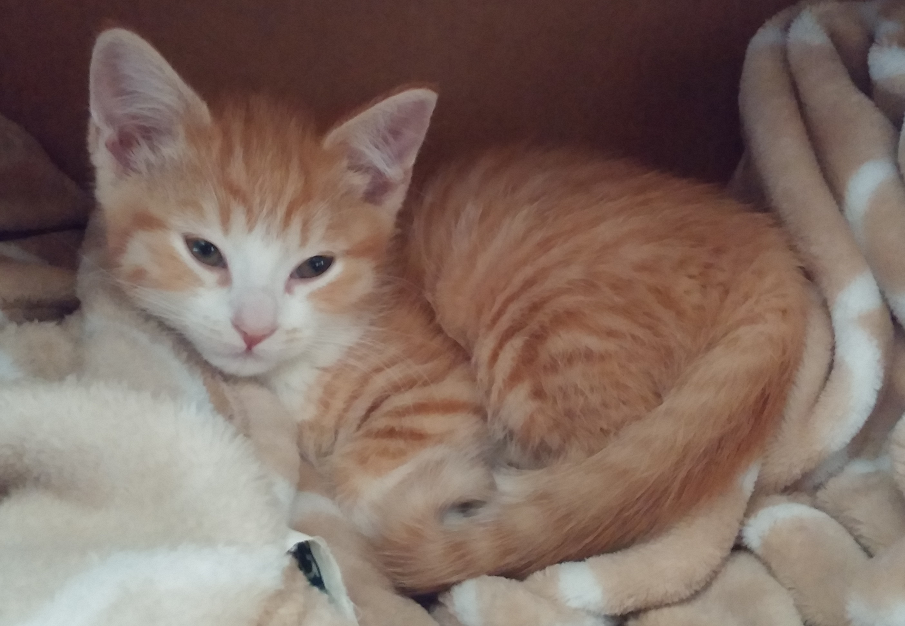
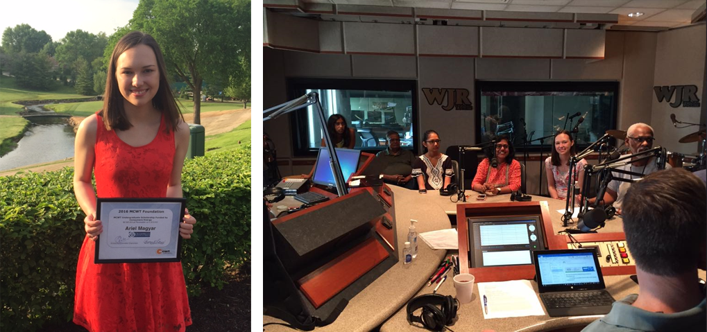
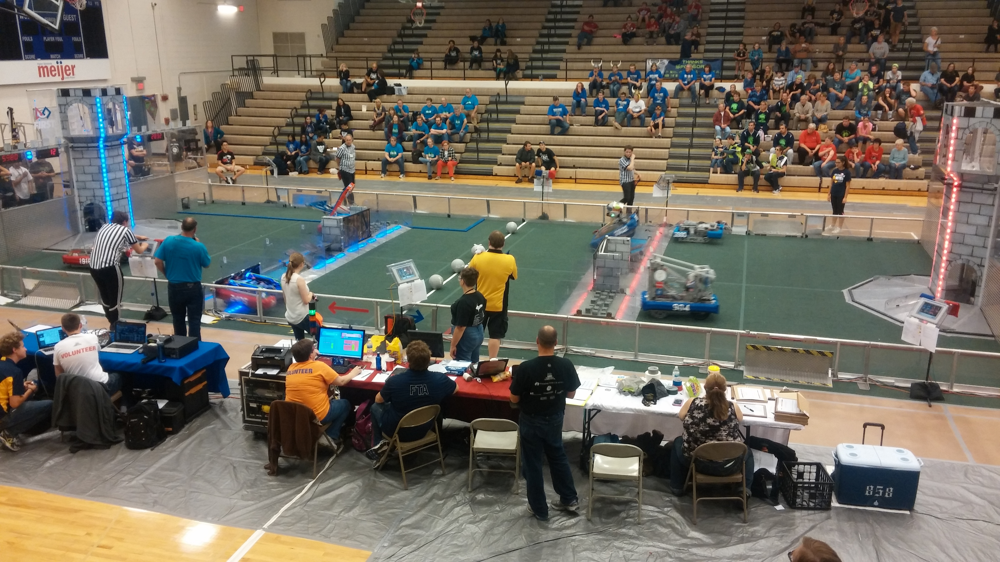

I'm Ariel, a fourth year student in the honors college at Grand Valley State University majoring in Computer Engineering. I am also the Vice President and former Treasurer of the GVSU Collegiate Section of Society of Women Engineers. I have an interest in working with embedded systems and have experience in various technological positions including embedded software testing.
I've always loved working on projects. In my free time I like working on things involving graphic design, programming, and web design. I also enjoy making greeting cards and raising my kitten, May.
I am proficient and farmiliar in multiple programming languages including C, C++, Arduino C, Java, JavaScript, HTML, CSS, CFML, and SQL. I also enjoy learning new ones!
Something that I am very passionate about is collaborating with and inspiring women in engineering. Part of this is because my journey to engineering started out due to the Michigan Council of Women in Technology (MCWT), an organization whose mission is to make Michigan the top state for women in tech. In my senior year of high school I was part of GET-IT, a program by MCWT that encourages high school girls to pursue a career in technology. I listened to speakers, placed in the annual web design contest, and won an award with my team in the annual Robofest competition.
During my second year of college I was awarded the MCWT Undergraduate Scholarship, worth up to $15,000 over three years, for my involvement in technology and commitment to academics. I was honored to speak on WJR, a popular Detroit-based radio station, to raise awareness for the scholarship and the importance of diversity in technology professions.
In college I continue my involvement with women in engineering through the Society of Women Engineers. I am the Vice President of this organization at GVSU where I help plan meetings, recruit new members, and organize events. I also had a great time volunteering at a local girls FIRST robotics competition. It brings a smile to my face to be in a room full of competent, professional engineers who are also women like me.
I developed this website myself and use it as a portfolio to show off my work. You can contact me at arielamagyar@gmail.com and view my LinkedIn profile. My resume is available upon request.